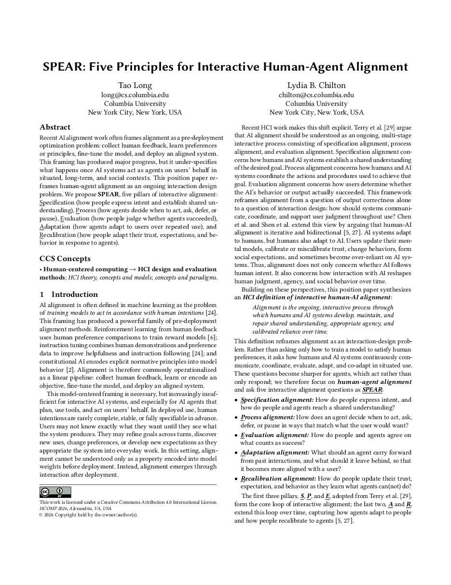

Interactive Human-AI Alignment:Five Principles of SPEAR
Columbia University
HCOMP 2026

Alignment does not end when a model is deployed.
— SPEAR treats it as something people and AI keep negotiating, maintaining, and repairing in use.
1/ From a Pipeline to an Interaction
Alignment is often framed as a pre-deployment optimization problem: collect human feedback, learn preferences or principles, fine-tune, and deploy. That has driven major progress, but it under-specifies what happens once AI systems act in situated, long-term, and social contexts.
Alignment is the ongoing, interactive process through which humans and AI systems develop, maintain, and repair shared understanding, appropriate agency, and calibrated reliance over time.
Summary
Alignment cannot be understood only as a property encoded in model weights before deployment. It emerges through interaction after deployment, which makes it an interaction design problem.
2/ SPEAR: Five Pillars of Interactive Alignment
SPEAR asks five interactive alignment questions. The first three, adopted from Terry et al., form the core loop within a task. The last two extend that loop across tasks and beyond sessions.
How do people express intent, and how do people and AI reach a shared understanding?
How does AI decide when to act, ask, defer, or pause in ways that match what the user would want?
How do people and AI agree on what counts as success?
What should AI carry forward from past interactions, and what should it leave behind?
How do people update their trust, expectations, and behavior as they learn what AI can(not) do?
Summary
Each principle names a point where alignment can succeed or fail after deployment, and each has a concrete interaction that makes it negotiable instead of implicit.
3/ Interaction Mechanisms as Alignment Mechanisms
These questions are not entirely new. HCI has studied closely related problems for decades. What is new is the scale, opacity, agency, and adaptivity of contemporary AI systems, which makes those theories newly relevant to alignment.
Takeaways
- Treat alignment as an ongoing, interactive process, not only a pre-deployment property.
- Design for all five questions: specification, process, evaluation, adaptation, and recalibration.
- Support informed, revisable calibration rather than assuming more trust, less checking, or broader delegation is always better.
BibTeX
If this work is useful to you, here is a citation you can copy.
@inproceedings{long2026spear,
author = {Long, Tao and Chilton, Lydia B.},
title = {SPEAR: Five Principles for Interactive Human-Agent Alignment},
year = {2026},
publisher = {Association for Computing Machinery},
address = {New York, NY, USA},
booktitle = {Proceedings of the 2026 ACM Conference on Human-AI Complementarity and Alignment},
location = {Alexandria, VA, USA},
series = {HCOMP '26},
url = {https://iamtaolong.github.io/project_pages/spear.html}
}